Nossos Projetos
Da ideia ao artesanato — o processo por trás da PlásTec.
Na PlásTec, nossos projetos refletem nosso compromisso com a inovação e a sustentabilidade. Trabalhamos continuamente para desenvolver iniciativas que não apenas atendem aos nossos objetivos escolares, mas também demonstram o potencial do plástico reciclado.
Da proposta ao produto: o projeto começou com a ideia de produzir filamentos de PET-G para canetas 3D — um processo que exige extrusão controlada do plástico derretido. Ao enfrentar os desafios técnicos, a equipe redirecionou o foco: em vez de produzir o filamento, passamos a usar a caneta 3D como ferramenta criativa e o plástico reciclado como matéria-prima para artesanatos.
Sustentabilidade e educação: todo o processo foi documentado e ensinado entre os membros da equipe. Aprendemos técnicas de modelagem a calor, corte de plástico, pintura e montagem — habilidades que vão além do projeto escolar e formam uma base para pensar a economia circular na prática.
📸 Bastidores da Produção
Como cada peça foi feita — da garrafa ao produto final.
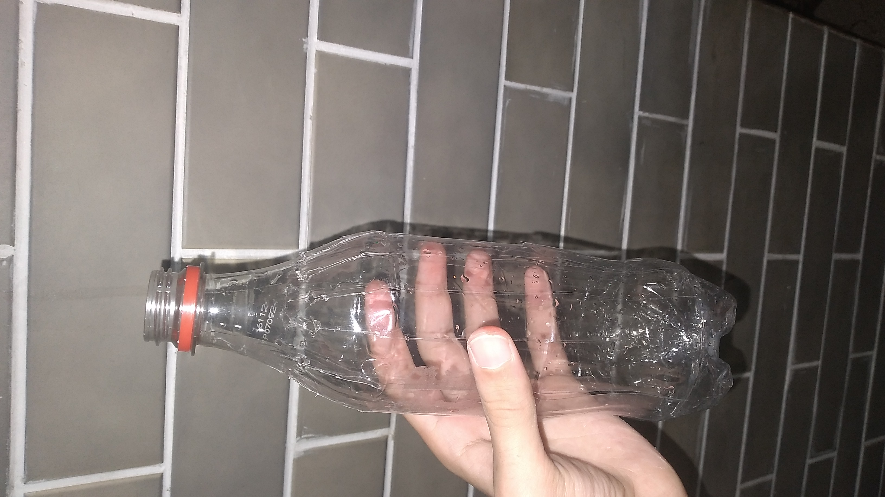
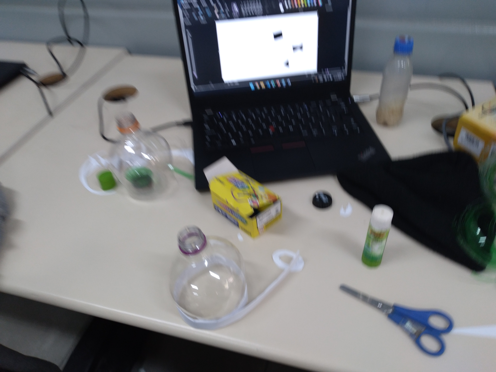
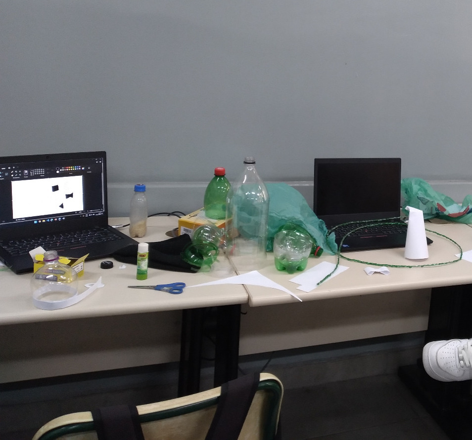
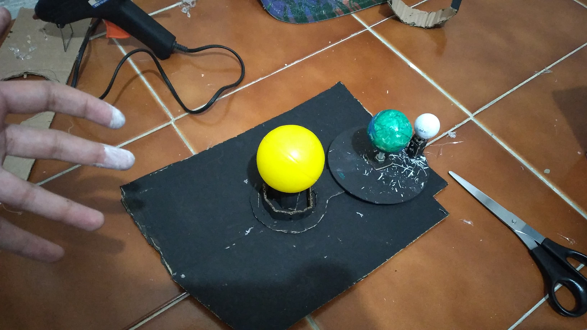
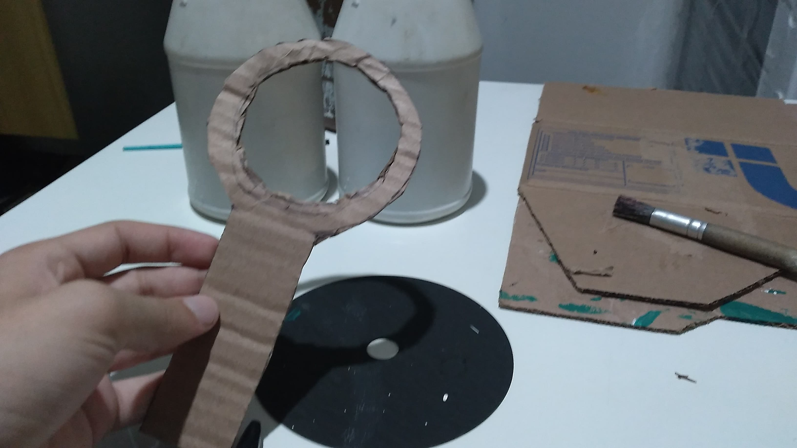
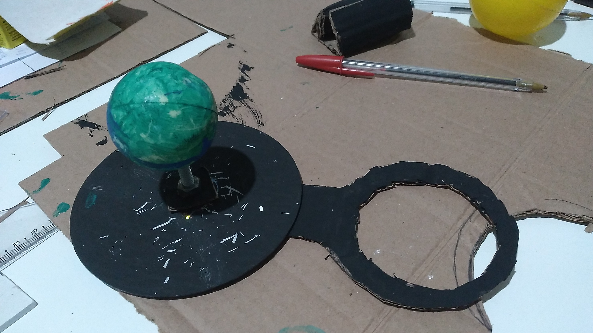
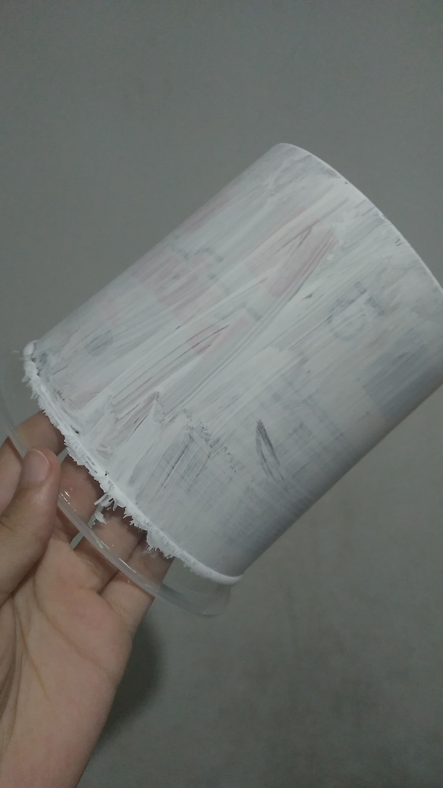
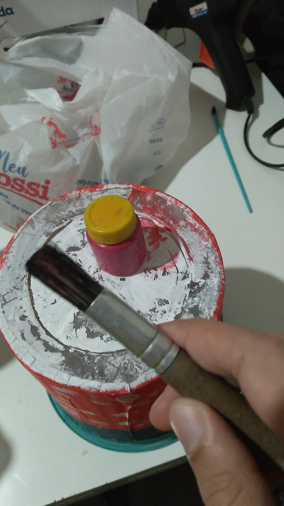
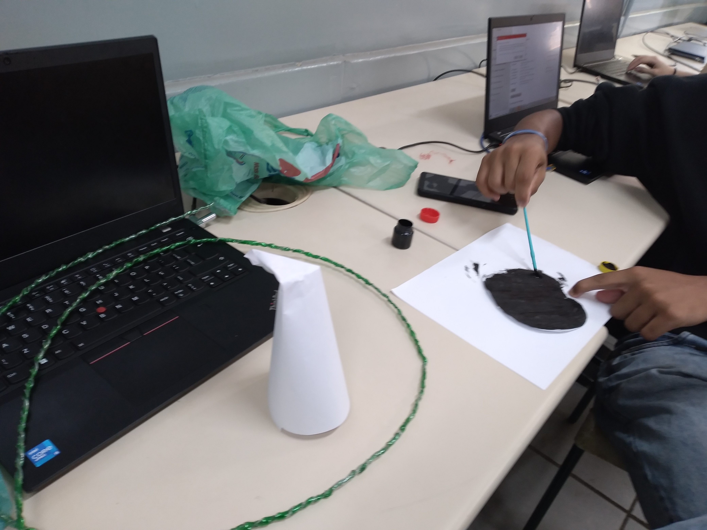
🎪 Galeria da Feira
Fotos do estande e da apresentação do projeto.

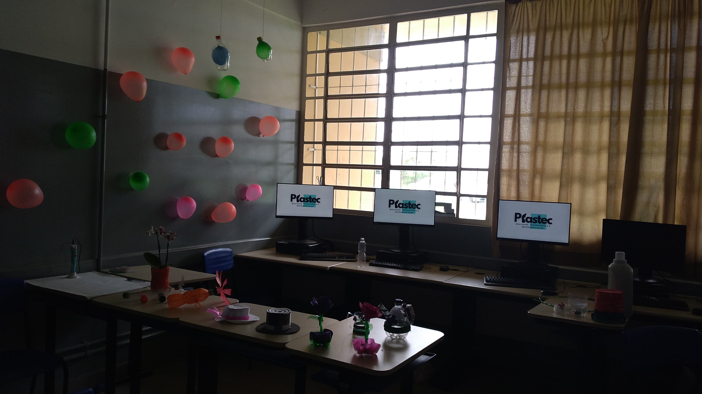

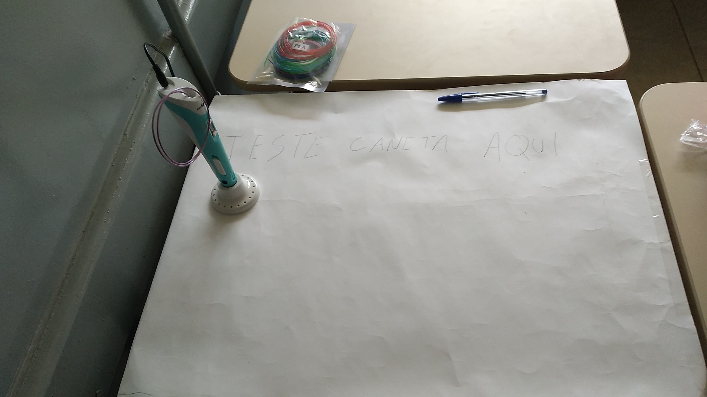
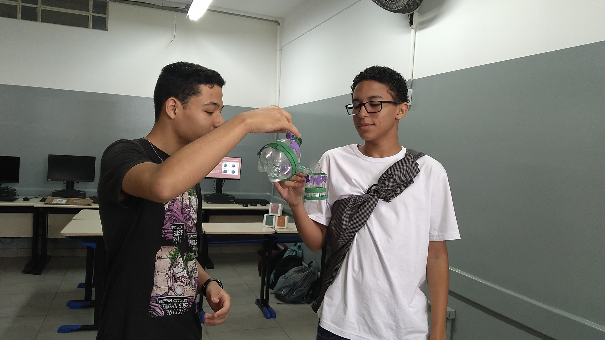
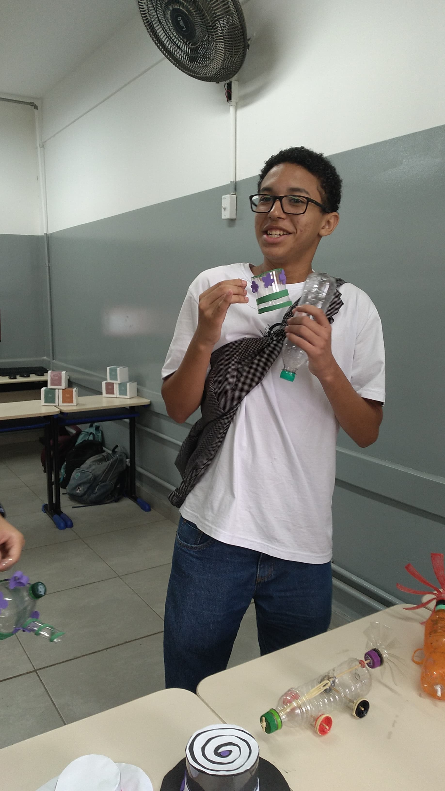
🎬 Vídeos da Feira
Veja o projeto em ação durante a apresentação.
Visão geral do estande da PlásTec na Feira de Projetos — Dez/2024
Demonstração do jogo de chá artesanal para visitantes da feira